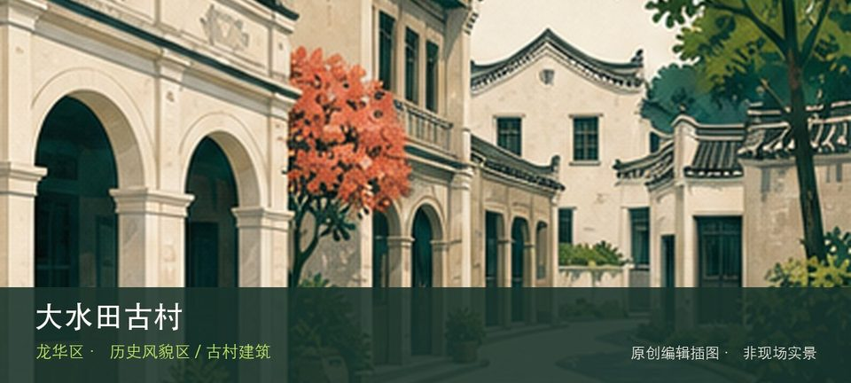

适合谁
适合建筑、地方史和社区观察者；参观时须尊重居民、宗教礼仪与生产秩序。

SHENZHEN GUIDE · 234
观澜街道大水田社区 · 历史风貌区 / 古村建筑
大水田古村位于观澜街道大水田社区，首批历史风貌区以客家旧村、碉楼和传统街巷呈现观澜河谷聚落的生活尺度。先辨认大水田古村旧巷，再观察客家碉楼与民居，两者共同说明这里为何不能被同类地点的泛化标签替代。阅读这处地点要把大水田古村旧巷与客家碉楼与民居放回仍在使用的街巷或社区中，不把历史空间当成布景。先看公开区域，再按居民生活、礼仪和开放边界调整停留，不进入封闭建筑。
WHY GO
适合建筑、地方史和社区观察者；参观时须尊重居民、宗教礼仪与生产秩序。
先核对大水田古村当天开放与入口，从大水田古村旧巷开始；体力或时间不足时，在前往客家碉楼与民居之前结束，不临时追加陌生支线。
公共交通先到观澜街道大水田社区片区，再以大水田古村公开参观入口为终点；多入口地点须按计划游线选择入口，并预先锁定返程站点。
车辆停在大水田古村外围正规公共停车场后步行进入；不驶入窄巷，不占居民门口、作业区或消防通道。
10 月至次年 4 月步行较舒适；夏季避开正午，雨天留意石板、台阶和老建筑周边湿滑。
NEARBY IDEAS